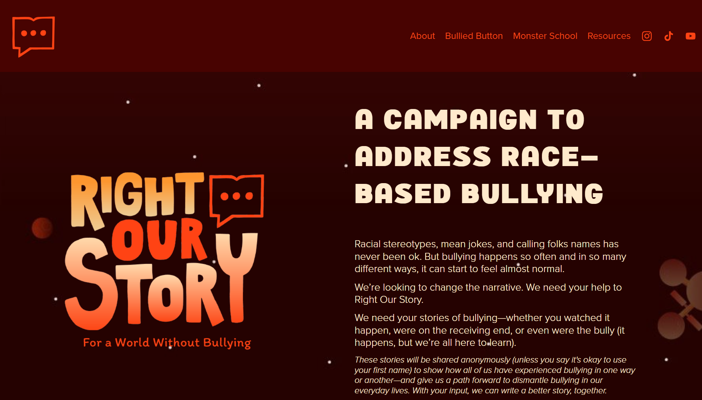
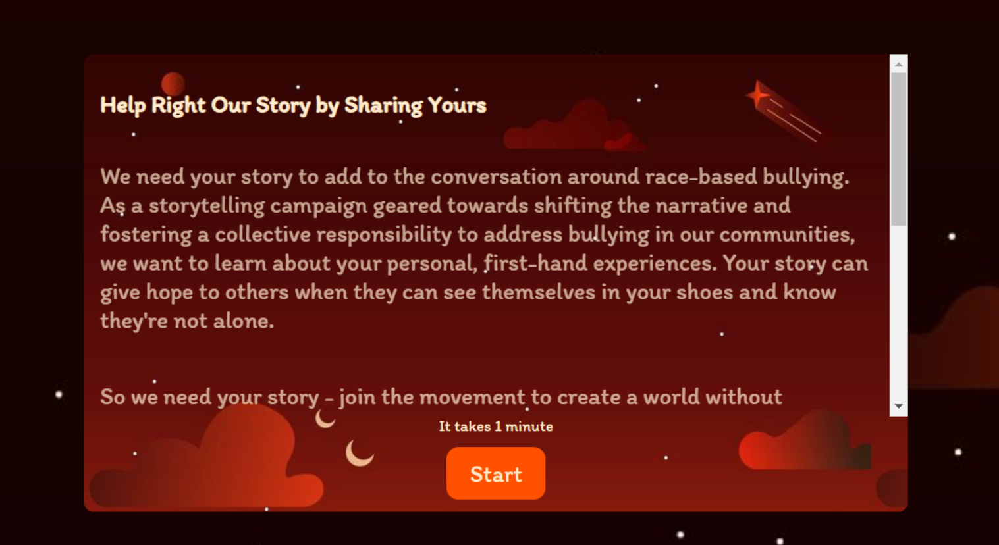
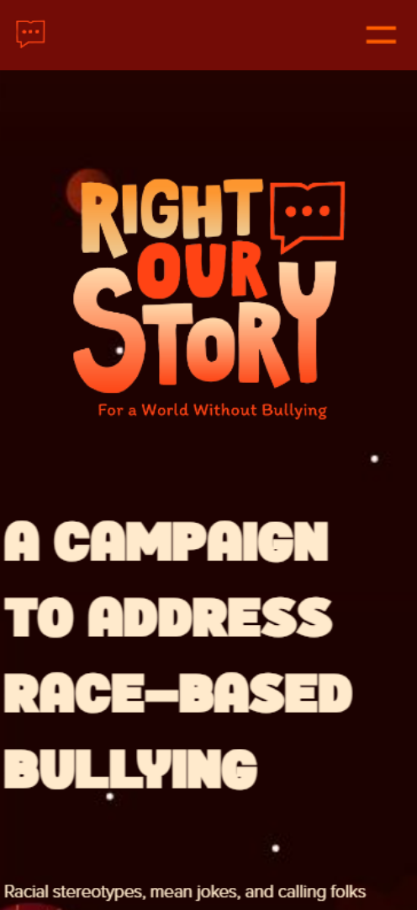
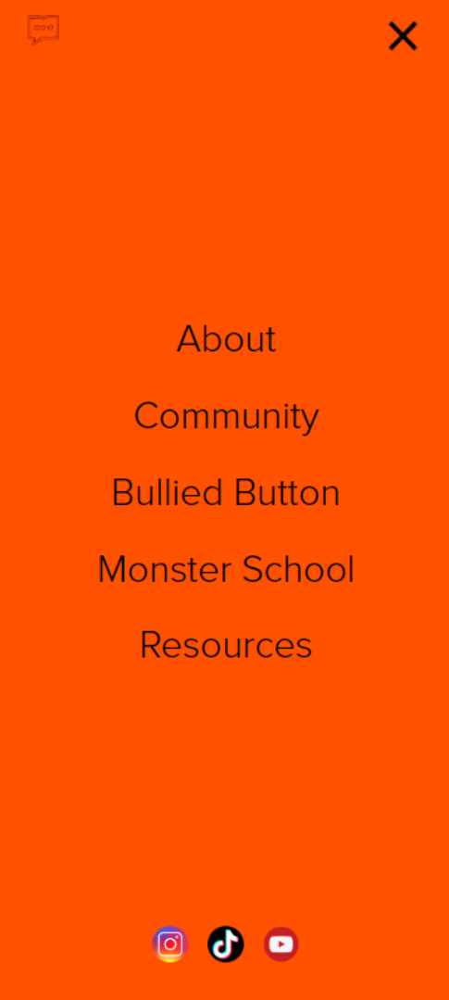
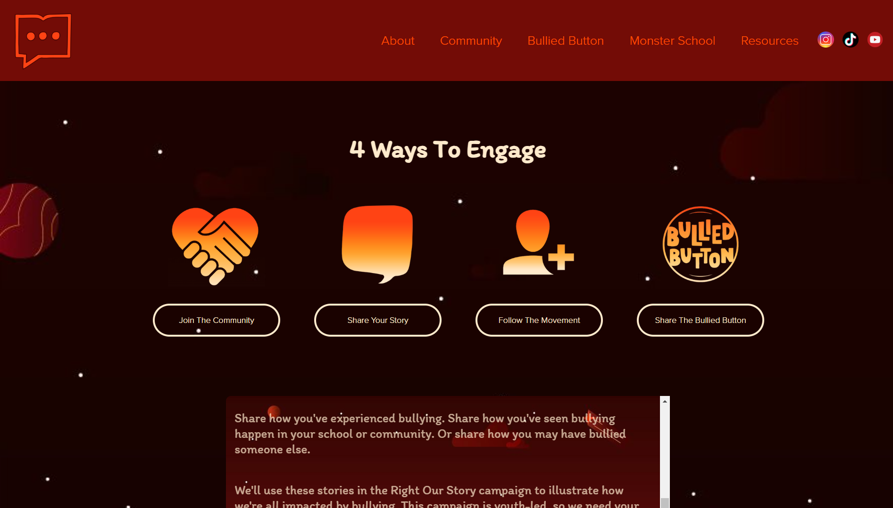
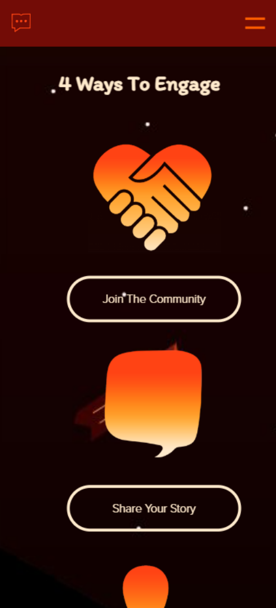
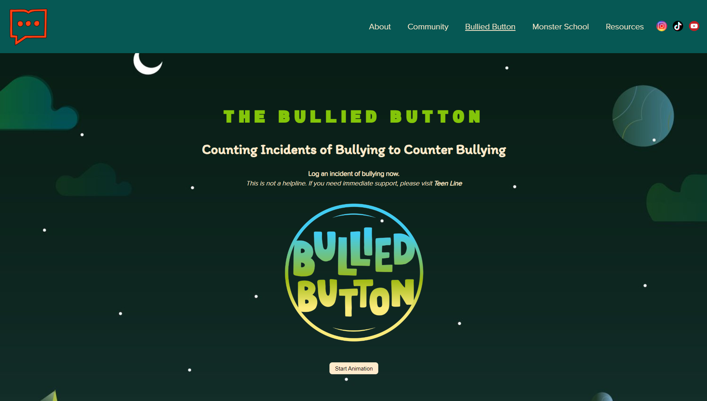
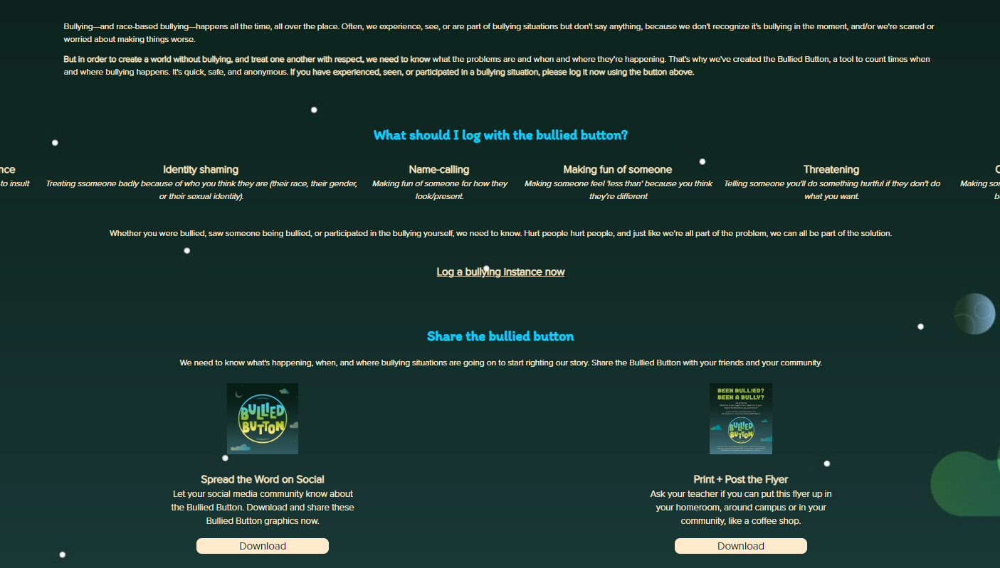

De opdracht:
Voor dit project moesten we voor het vak Frontend Developement zelf een website uitkiezen en
deze met HTML, CSS en JavaScript na te maken. Ik heb zelf gekozen voor rightourstory.com. We moesten de website
responsive maken dmv media queries en we moesten 2 pagina's namaken. Ik heb de home pagina en de 'Bullied
Button' pagina nagemaakt.
De uitvoering:
Homepagina: Als eerste de homepagina. Ik heb alle kopjes tekst met flexbox op de juiste
locaties gezet. Verder heb ik de achtergronden gekopieerd van de originele website. Met JavaScript heb ik
ervoor gezorgd dat de achtergrondkleur van de header is niet zichtbaar totdat je naar beneden scrollt, net
als de originele website.

Originele website van rightourstory.com
Verder zijn er nog een paar interessante onderdelen van deze pagina, waaronder een scrollbare sectie. Dit
is een article binnen een section. De section bestaat uit de achtergrond, de link
onderin
en natuurlijk de article. Om ervoor te zorgen dat de tekst scrollbaar wordt, maak je in CSS de
overflow-x verborgen (hidden) en de over-flow-y op automatisch (auto),
verder maak je de article met flexbox verticaal door deze een column te maken en
flex-wrap op nowrap te zetten.

Scrollbare sectie
Responsive: Ik heb de nav bar responsive gemaakt door deze op mobiel achter een hamburgermenu
te verstoppen. Als er op het hamburgermenu icoontje wordt gedrukt, dan komt de navigatie bar in beeld. Op
desktop is deze in de header te zien. Verder wordt de grootte van de tekst kleiner op mobiel.

Om naar de navigatie te gaan, klik je op het hamburgermenu rechtsboven

De navigatie op mobiel
Flexbox: De website is ingedeeld met flexbox. Hiermee wordt bepaald of elementen naast of
onder elkaar komen te staan. Alles in de header staat bijvoorbeeld naast elkaar. Op mobiel staan alle
teksten en afbeeldingen onder elkaar. Op desktop is er meer plek, dus zijn er elementen naast elkaar. Dit
wordt bepaald met flexbox.

Lijst op desktop

Lijst op mobiel
2e pagina: De bullied button pagina heeft een eigen CSS bestand. Hierin wordt een andere
achtergrond geladen worden alle CSS functies exclusief voor deze pagina opgeslagen. Deze pagina heeft ook
een kleine animatie op de bullied knop. Ik heb een knop toegevoegd om deze animatie aan en uit te zetten.
Verder heb ik op deze pagina veel flex-box gebruikt voor alle lijsten en korte stukken tekst.

Animatie knop

Stukken tekst ingedeeld met flex-box
Toegankelijk: Deze website is toegankelijk voor blinden/slechtzienden. Je kunt met tab
door
alle links heen gaan en alle tekst door de verteller laten spreken.
Overige CSS: Bij deze opdracht was het niet toegestaan om gebruik te maken van classes en
divs. Alle elementen zijn in CSS geselecteerd met 'sections' en 'nth-of-types'. Verder zijn er gebruik
gemaakt van custom properties en online fonts. Alle code is te zien op de github pagina.
Bekijk website
Github Pagina
Eigen reflectie: Ik vond dit een leuk project om te doen. Het was heel erg leerzaam en ik
kan na dit vak gedaan te hebben een stuk beter overweg met HTML, CSS en JS. Een punt voor verbetering is
wel de responsiviteit. Achteraf had ik meer media queries erin gezet om meer verschillende
schermgroottes
goed te laten werken met de letter- en afbeeldinggroottes. Verder had ik een website kunnen kiezen waar
iets
meer animaties en transities in zaten voor meer uitdaging.